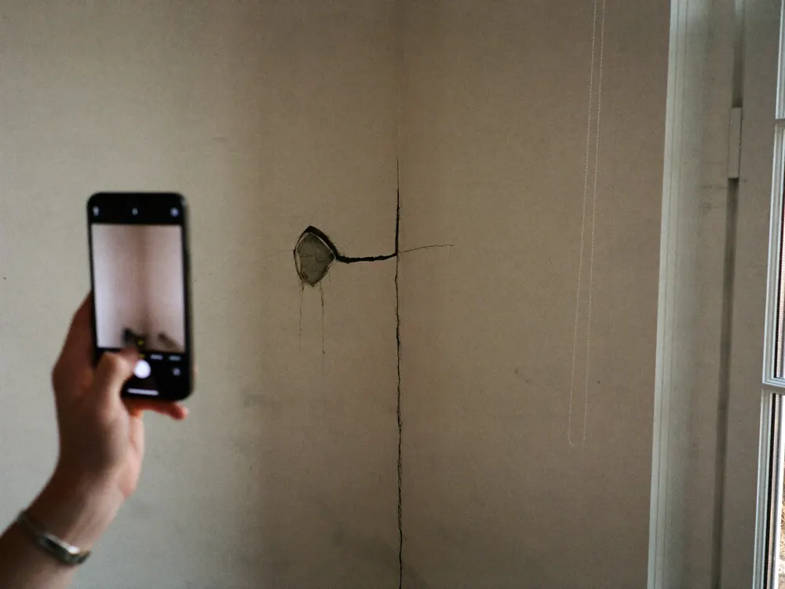
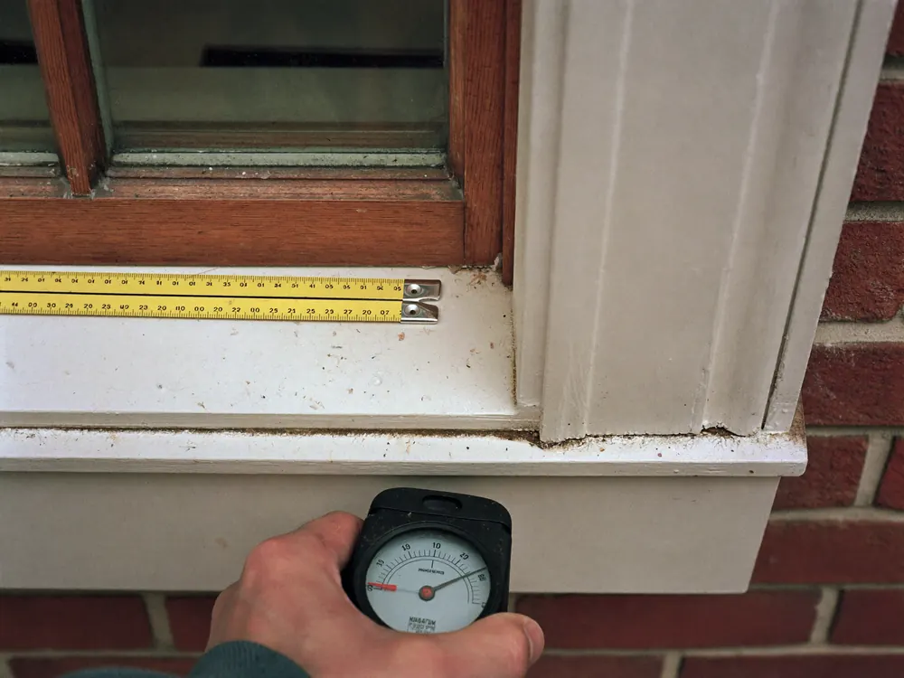
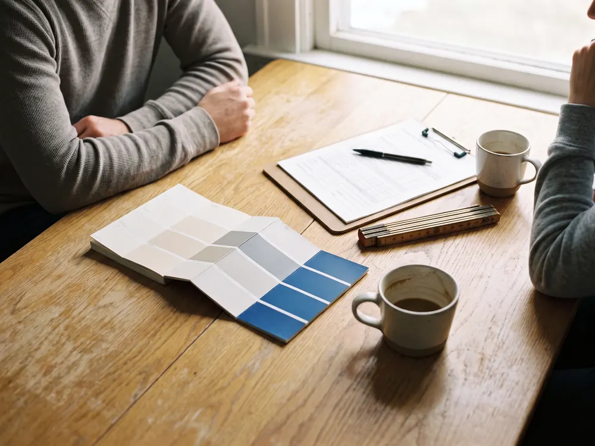
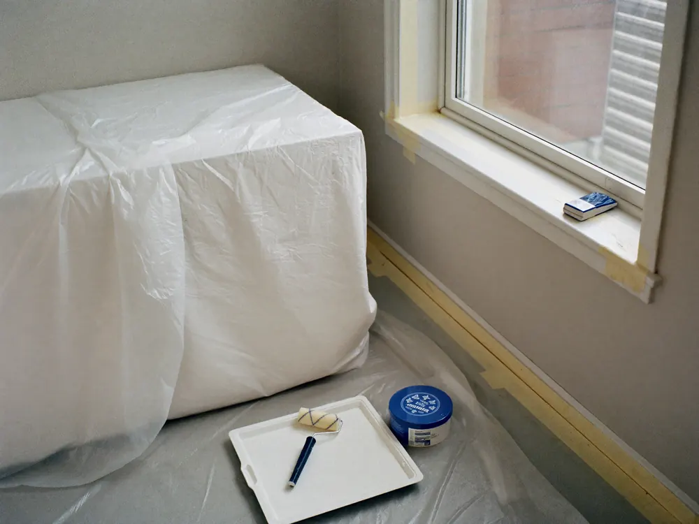
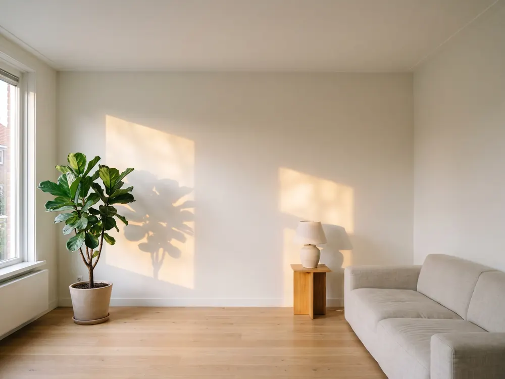

Binnenschilderwerk
Wanden, plafonds, deuren, kozijnen en trappen. Strak afgeplakt en netjes achtergelaten.

Waar de uren in gaan zitten
Binnen schilderen is voor een groot deel voorbereiding. Ontvetten, schuren, kleine gaatjes dichtzetten, afplakken. Dat ziet u later niet terug, maar juist daar zit het verschil tussen een muur die twee jaar mooi blijft en een die tien jaar mooi blijft. Meubels en vloeren dek ik af, en aan het eind staat alles weer zoals het stond.
- Wand- en plafondschilderwerk
- Deuren, kozijnen en ander houtwerk
- Trappen en trapgangen
- Alles afgedekt, aan het eind weer opgeruimd
Vijf stappen
Het meeste werk zit in wat u later niet ziet
Goed schilderwerk begint bij een goede ondergrond. Schuren, gaatjes dichtzetten en afplakken kosten de meeste uren, en precies daar zit het verschil tussen twee jaar mooi en tien jaar mooi.

01U stuurt foto's of belt
Een paar foto's van de ruimte of het kozijn zeggen vaak al genoeg. Zet erbij wat u wilt en wanneer het ongeveer zou moeten.

02Ik kom langs en kijk
Ik bekijk de ondergrond, de staat van het hout en hoeveel voorbereiding er nodig is. Daar zit vaak meer werk in dan mensen denken.

03Een offerte met de voorbereiding erin
Op papier staat wat er gebeurt: schuren, gronden, lakken. Zo ziet u waar de uren in gaan zitten en waarom.

04Uitvoeren
Afdekken, afplakken, schilderen. U hoort vooraf wanneer ik begin en of u thuis moet zijn.

05Opruimen en samen nalopen
Tape eraf, spullen terug, afval mee. Aan het eind lopen we het werk samen na.
Vier stuks
Vragen over binnenschilderwerk
Dat hangt af van de oppervlakte, de staat van de ondergrond en hoeveel voorbereiding er nodig is. Twee kamers van dezelfde maat kunnen flink verschillen, puur door wat eronder zit. Daarom kom ik eerst kijken en noem ik pas daarna een prijs.
Meubels dek ik af en vloeren bescherm ik. Aan het eind gaat de tape eraf, gaan spullen terug zoals ze stonden en neem ik het afval mee. Op Werkspot is dat het punt dat het vaakst terugkomt in de reviews.
Dat hangt af van de ruimte en de ondergrond. In een badkamer of keuken is een andere verf nodig dan in een slaapkamer. Ik denk mee over materiaal en kleur, de keuze blijft aan u.
Dat mag, en het hoeft niet. Koopt u zelf, dan hoort u vooraf hoeveel er nodig is en welk type past. Neem ik het mee, dan staat het als post in de offerte.
Drie andere diensten
Vaak in dezelfde klus
Buitenschilderwerk
Kozijnen, deuren, boeidelen en ander buitenhout. Eerst het hout in orde, dan pas verf.
Wat dat inhoudtBehangen
Behang, renovlies en glasvezel. Oud behang gaat er eerst af.
Wat dat inhoudtHoutreparaties en onderhoud
Houtrot herstellen, een deur die klemt, klein onderhoud. Het werk dat vaak bij schilderwerk hoort.
Wat dat inhoudtLaat mij er even naar kijken
Aan het langskomen en de offerte zitten geen kosten. U hoort wat er nodig is en wat kan blijven.
Ik bel u om een moment af te spreken. Stuur gerust alvast een paar foto's van de ruimte, dan kan ik meteen meedenken. In deze voorbeeldpagina gaat er nog niets echt de deur uit.
Liever meteen contact
Bel of app mij gerust. Een paar foto's van de ruimte zeggen vaak al genoeg om te weten waar het over gaat.
- Telefoon
- 06 83 04 41 91
- 06 83 04 41 91
- aribouw10@gmail.com
- Adres
- Mommenkamp 27, 6932 HT Westervoort
- Werkgebied
- Westervoort, Arnhem, Nijmegen en omgeving
- Reviews
- 5,0 op Werkspot